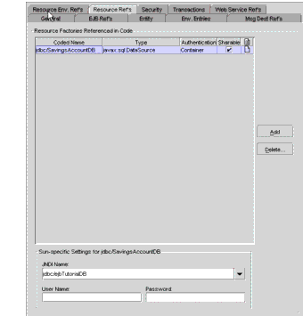

Database Connections
The Application Server ships with a relational database product named Derby.
Note: Application Server 8.2 includes a copy of the open source Derby database server. Application Server 8.0/ 8.1 includes the PointBase database server. If you are using Application Server 8.0/8.1, either follow the instructions in the J2EE Tutorial at
http://java.sun.com/j2ee/1.4/docs/tutorial-update6/doc/index.htmlthat works with Application Server 8.0/8.1 or upgrade to Application Server 8.2 (seehttp://java.sun.com/j2ee/1.4/download.html#appservto download).
The following material shows how the
SavingsAccountBeanexample of Chapter 26 accesses a Derby database. TheSavingsAccountBeancomponent is an entity bean with bean-managed persistence.Session beans and web components will use the same approach as
SavingsAccountBeanto access a database. (Entity beans with container-managed persistence are different. See Chapter 27.)Coding a Database Connection
For the
SavingsAccountBeanexample, the code that connects to the database is in the entity bean implementation classSavingsAccountBean. The source code for this class is in this directory:The bean connects to the database in three steps:
- Specify the logical name of the database.
private String dbName
= "java:comp/env/jdbc/SavingsAccountDB";The
java:comp/envportion of the logical name is the environment naming context of the component. Thejdbc/SavingsAccountDBstring is the resource reference name (sometimes referred to as the coded name). Indeploytool, you specify the resource reference name and then map it to the JNDI name of theDataSourceobject.- Obtain the
DataSourceobject associated with the logical name.
InitialContext ic = new InitialContext();
DataSource ds = (DataSource) ic.lookup(dbName);Given the logical name for the resource, the
lookupmethod returns theDataSourceobject that is bound to the JNDI name in the directory.- Get the
Connectionobject from theDataSourceobject.
Connection con = ds.getConnection();Specifying a Resource Reference
The application for the
SavingAccountBeanexample is in theSavingsAccountApp.earfile, which is in this directory:For your convenience, the resource reference and JNDI names in
SavingsAccountApp.earhave already been configured indeploytool. However, you may find it instructive to openSavingsAccountApp.earindeploytooland follow these steps for specifying the resource reference.
- In
deploytool, selectSavingsAccountBeanfrom the tree.- Select the Resource Ref's tab.
- Click Add.
- In the Coded Name field, enter
jdbc/SavingsAccountDB.- In the Type combo box, select
javax.sql.DataSource.- In the Authentication combo box, select Container.
- If you want other enterprise beans to share the connections acquired from the
DataSource, select the Sharable checkbox.- To map the resource reference to the data source, enter
jdbc/ejbTutorialDBin the JNDI Name field.If the preceding steps are followed, the Resource Ref's tab will appear as shown in Figure 31-1.

Figure 31-1 Resource Ref's Tabbed Pane of
SavingsAccountBeanCreating a Data Source
In the preceding section, you map the resource reference to the JNDI name of the data source. The
deploytoolutility stores this mapping information in a deployment descriptor ofSavingsAccountBean. In addition to setting the bean's deployment descriptor, you also must define the data source in the Application Server. You define a data source by using the Admin Console. To create the data source with the Admin Console, follow this procedure:
All of the material in The J2EE(TM) 1.4 Tutorial is copyright-protected and may not be published in other works without express written permission from Sun Microsystems.